打开 ACTS IDE
在 Package 视图下，右键含 @Test 注解的函数名，ACTS 功能 -> 修改测试用例，如下图：
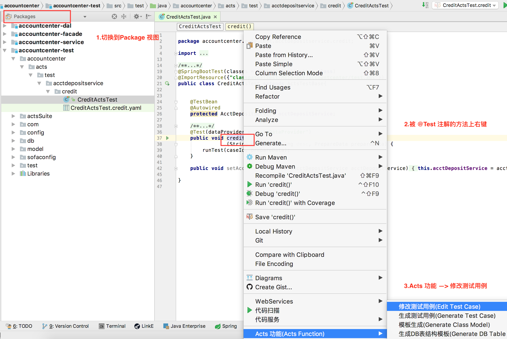
编写测试数据
准备入参
根据被测的接口方法的入参（类型、顺序、数量）正确准备入参数据，简单类型包括 String、Date、Integer、Float、Double、Long、Short、Byte（包含其对应的基本类型，即 int、float 等）；复杂类型为 List、Map、Set、自定义类、Java 定义的类以及前面五者的嵌套等。
简单入参
入参设置上右键 -> 模版选择 -> 简单入参选择：
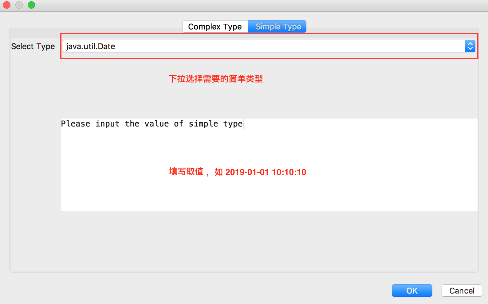
导入简单入参后，值直接在这里填写； 自上而下表示被测接口方法的第1个、第2个和第3个参数，右键可以调节顺序。
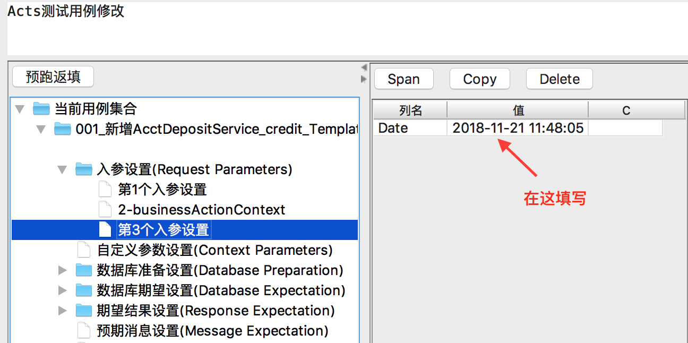
复杂入参
如图27所示，AccountTransRequest 和 BusinessActionContext 类需要生成入参模板，一般情况下，在一键生成测试脚本时会自动生成方法的入参和返回结果的类模板，打开 ACTS IDE 可对其进行编辑，如图28。
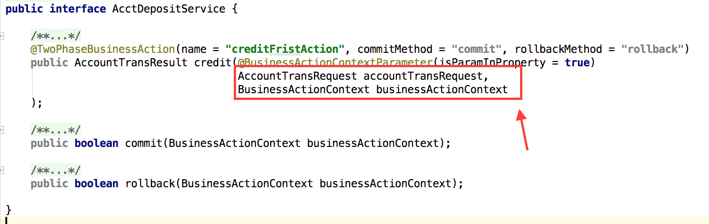
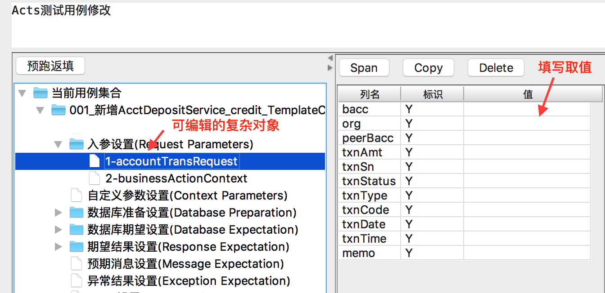
图28
如果生成测试脚本时没有识别出方法的入参和返回结果模版，可先生成复杂入参和结果模版（具体操作参考 对象模型生成），然后打开 ACTS IDE 编辑器，在入参设置上右键 -> 模版选择 -> 复杂类型，添加后可以看到复杂对象，直接进行编辑。
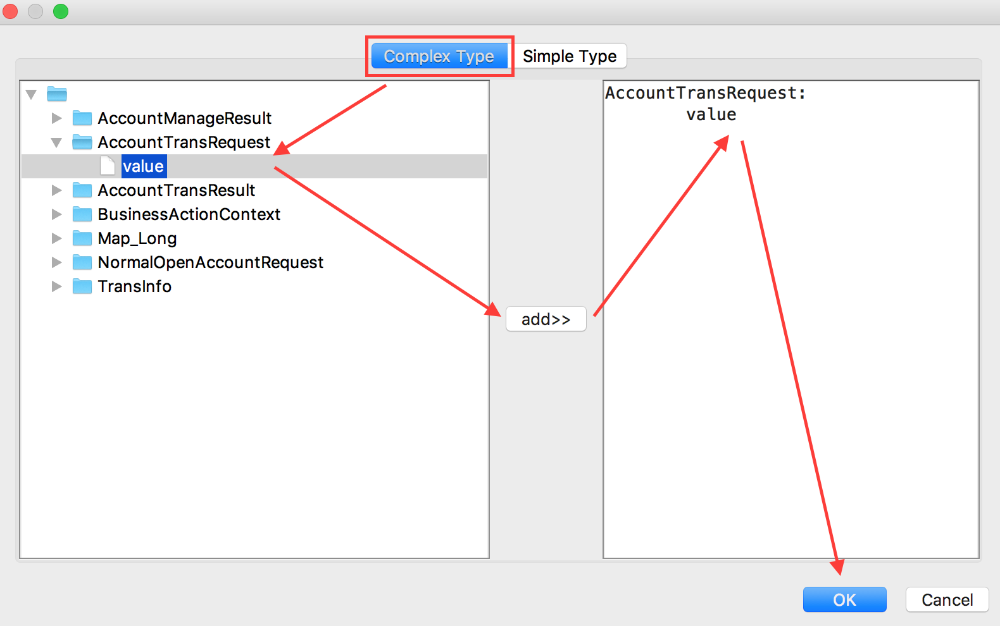
list
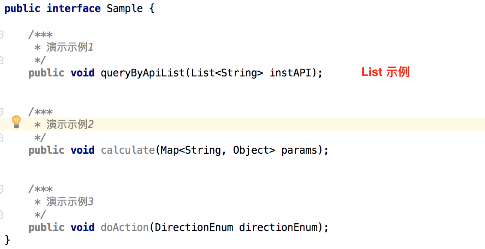
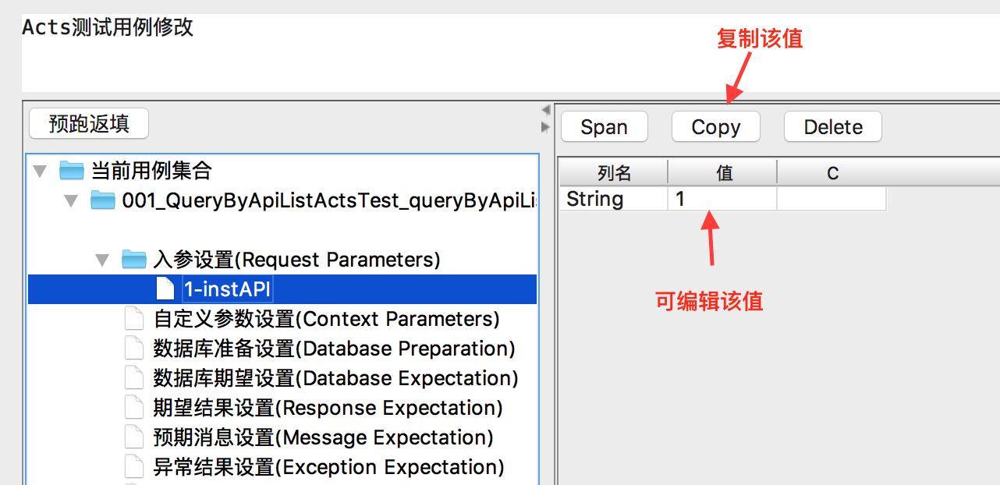
map
以示例2为例（Set 与此类似）
图32中，演示示例2的方法入参为 Map<String,Object> 类型。由于 Object 不是具体类型，如果要设置 Object 为复杂对象，则需要去编辑 YAML。例如设置 Object 为 AccountTransResult 类型，则按照如下编辑：
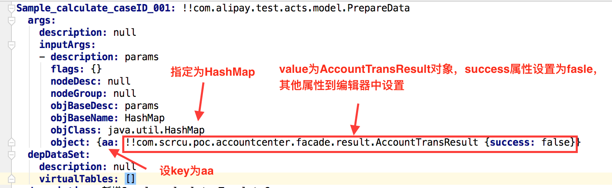
图32
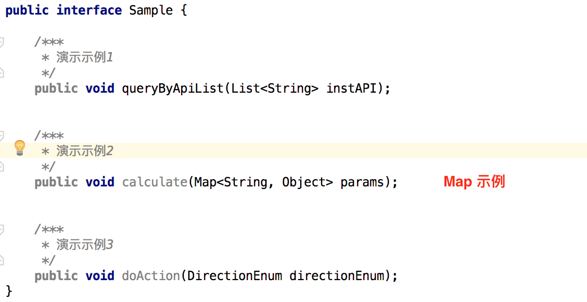
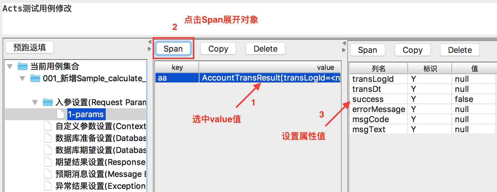
enum
代码样例：
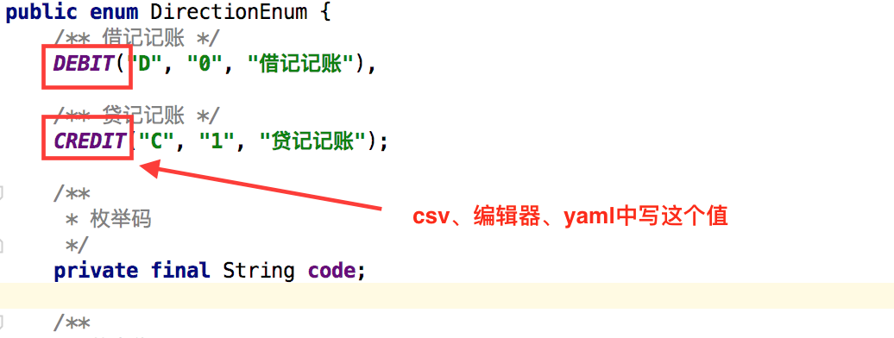
- 在 ACTS IDE 中编辑如下：
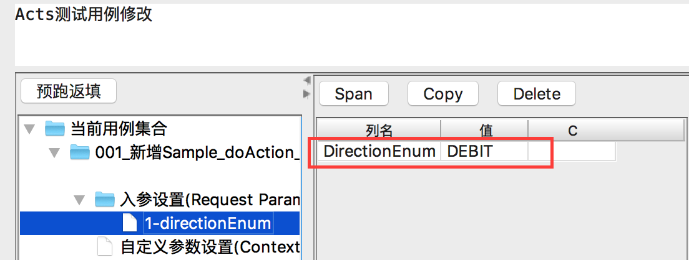
如果枚举嵌套在其他类中，则在该类的 CSV 模版中设置枚举的值为 DEBIT；
用例数据 YAML 中，如图37：
interestRecoverTypeEnum: !!com.alipay.fc.loancore.common.util.enums.InterestRecoverTypeEnum 'ALL'
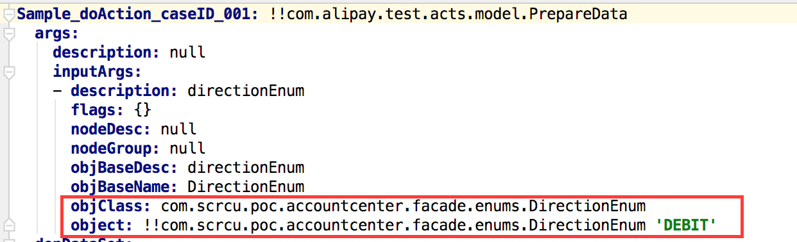
图37
编码方式准备入参
覆盖 prepare 方法，通过 ActsRuntimeContext 的方法，快速获取和设置用例入参，如图38所示：
- 获取所有入参：
List getInputParams() - 按位置获取：
Object getInputParamByPos(int i) - 新增用例参数：
void addInputParam(Object obj)
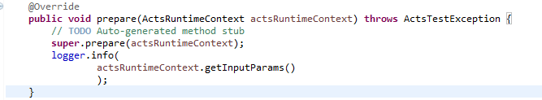
图 38
准备 DB 数据
准备 DB 数据-单列场景
如图39，在数据库准备设置位置右键，选择好要插入的 DB 模板（请先确保该DB模板已经生成），图中1、2、3步骤之后点击 OK 即插入 DB 准备模板，如图41，可对要插入 DB 的数据进行编辑：
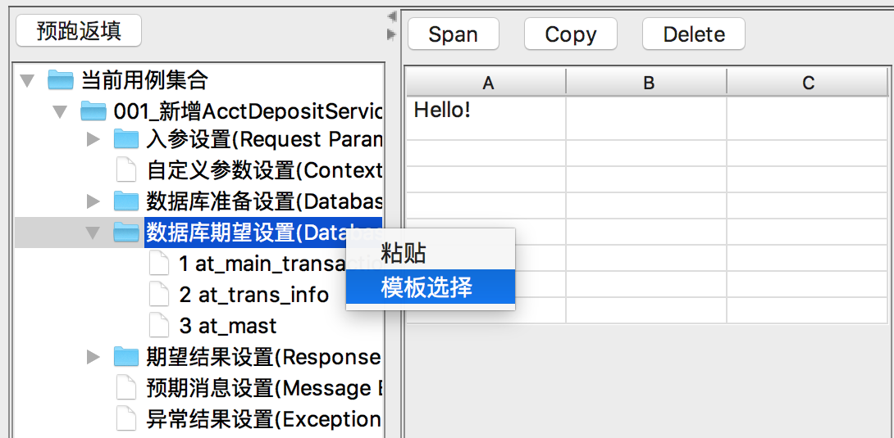
图39
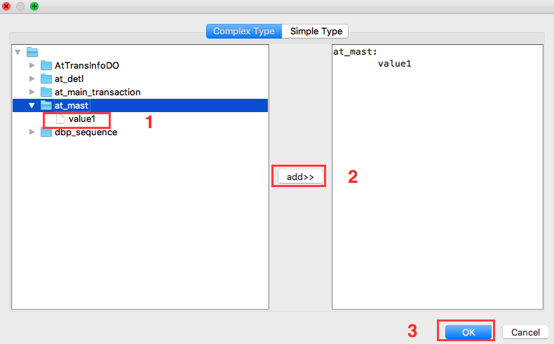
图40
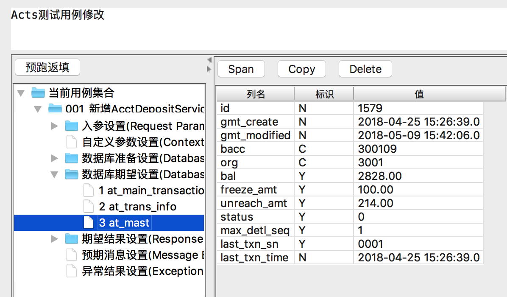
图41
准备 DB 数据-多列场景
选中一列数据，点击复制，按此方法可复制多列数据，然后进行编辑即可：
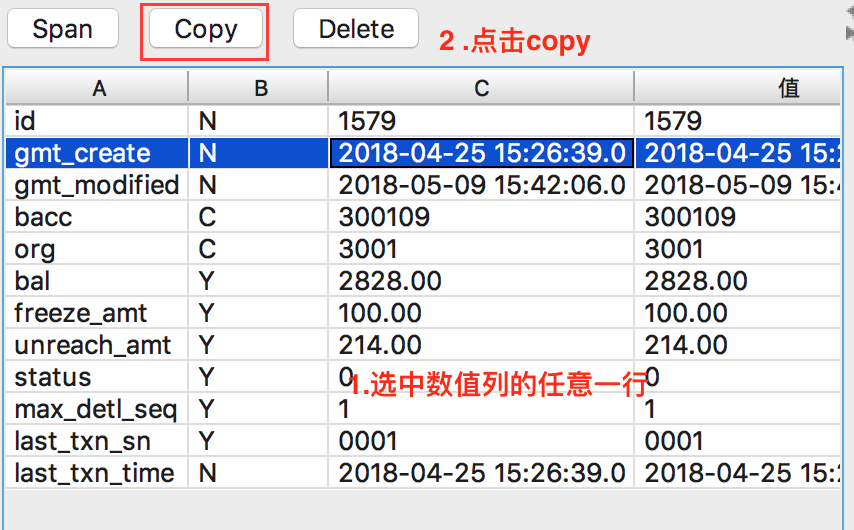
图42
准备 DB 数据-flag说明
数据依赖标记：
Y: 插入
N：不插入
C：以此为where条件对插入后的数据进行清理
F：数据库函数
L: 大字段换行准备，准备方式为A=B;C=D
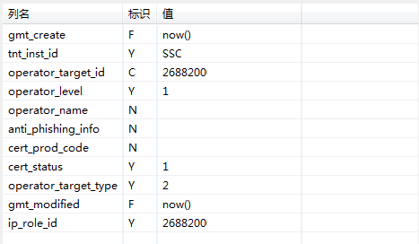
图43
准备期望结果数据
生成期望结果的对象模型后，在 ACTS IDE 界面中，期望结果设置右键 -> 模版选择，见下图。
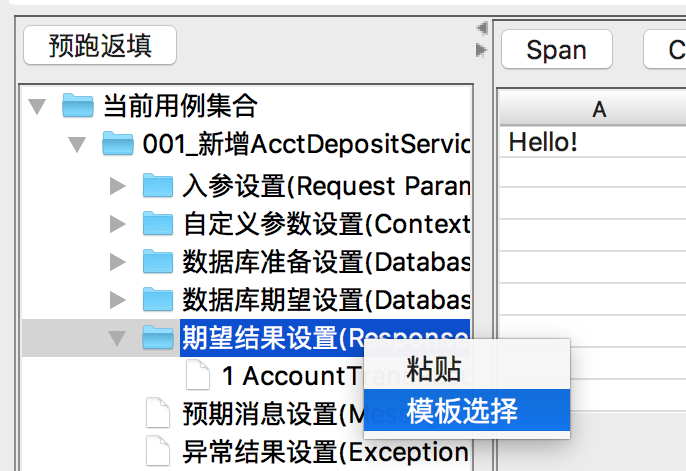
图44
期望结果的 flag 说明
Y: 校验
N：不校验
D：时间偏移值比较，如 D200
ME：map 默认全 key 校验，ME则以期望 key 为准，实际值多余期望值的 key 不予校验
对于返回结果的时间 Date 类型字段校验说明： 1. Y | null -> 代表期望为 null 2. Y | 2015-01-01 00:00:00 -> 代表期望为 2015-01-01 00:00:00 3. N | null -> 代表不校验 4. D200 | 2015-01-01 00:00:00/null -> 代表与 2015-01-01 00:00:00/new Date() 相差 200 秒
编码方式准备期望结果
覆盖 prepare 方法，通过 ActsRuntimeContext 的如下方法，快速获取和设置期望结果。
1. 获取期望结果：Object getExpectResult()
2. 设置期望结果：Boolean setExpectResult(Object objToSet)
准备期望 DB 数据
准备期望 DB 数据-单列场景
在数据库期望设置里配置，操作参考准备 DB 数据-单列场景
准备期望 DB 数据-多列场景
在数据库期望设置里配置，操作参考准备 DB 数据-多列场景
期望 DB 数据的 flag 说明
数据校验标记：
Y: 校验
N：不校验
C：以此为条件 select 然后比较，如果结果有多个，则返回的结果所有记录都要和当前需要校验的数据进行校验
CN： 这个 flag 表示当前这张表中以 C 和 CN 为条件查询出的结果为空
D200：表示对比时间的时候误差 200s 之内都算通过，日期类型的格式为：today
L： 数据库大字段换行数据校验，准备方式为 A=B;C=D
P：DB 大字段校验，以期望结果的 kv 为基准，对 DB 大字段里的 kv 进行校验，要求 DB 里的 kv 之间是换行分隔
R：正则匹配校验
准备期望异常数据
编码方式准备期望异常数据
部分系统封装的异常类没有默认构造函数，这样通过模版添加的异常结果在加载 YAML 时会有问题（无默认构造函数无法构造当前类），需要通过代码方式，结合自定义参数编写异常脚本，如下图：
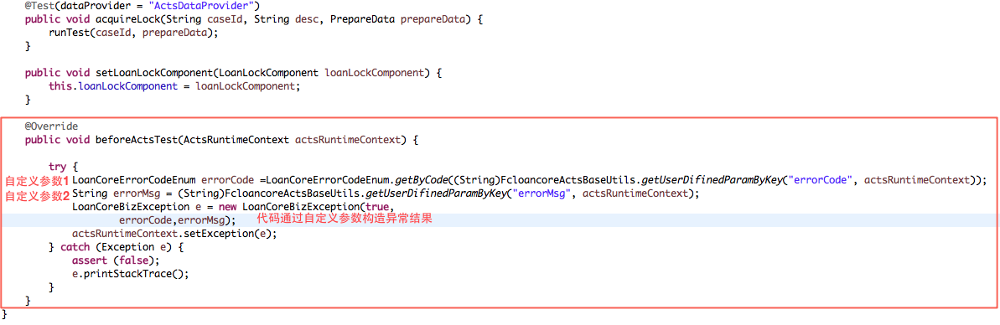
图45
准备自定义数据
自定义数据-用途
用户自定义的各类型数据，用于测试过程中自由使用。
自定义数据-数据类型
数据类型可参考 入参 部分
编码方式准备自定义数据
快速获取和设置自定义参数：
- 获取全部自定义参数：
getParamMap getParamMap() - 按 key 获取：
Object getParamByName(String paraName) - 新增自定义参数：
void addOneParam(String paraName, Object paraObj) - 替换自定义参数：
void setParamMap(Map<String,Object> paramMap) - 以范型方式获取自定义参数：
T getParamByNameWithGeneric(String paraName)
不同数据类型编辑方式
简单类型编辑
以自定义参数设置添加简单类型数据为例。如图46，自定义参数设置右键 -> 模板选择，弹框填写入参名字：
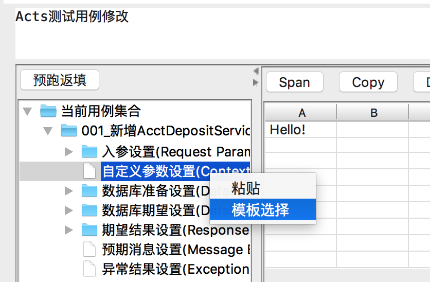
图46
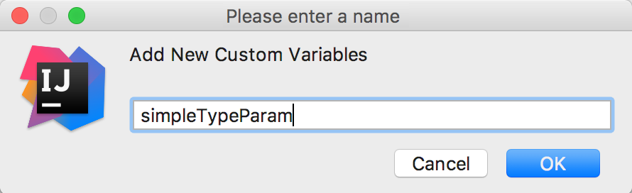
图47
选择 String 类型，在下方编辑框填写值即可，生成后也可自行编辑： 图48
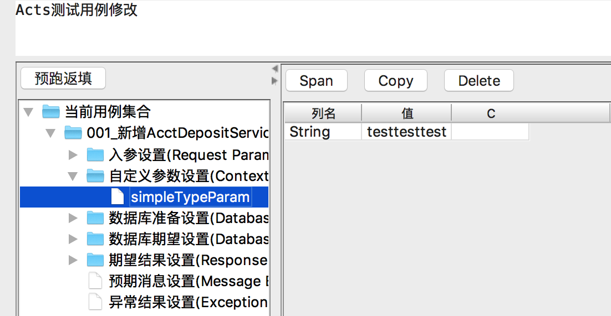
图49
复杂对象编辑
以自定义参数设置添加复杂对象数据为例
参照 简单类型编辑，在弹框填写好入参名字。然后在模板选择列表中（如果找不到想要的复杂对象，请先生成相应的数据模板），选择一个复杂对象，然后 add，点击 OK 确认。
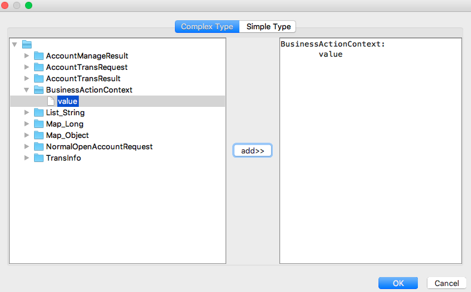
图50
如果该复杂对象中还包含复杂对象，选中该行，点击展开（如果没反应，尝试光标定位 value 列，然后点击展开），则数据会展开至当前右边的编辑区。如果还有复杂对象，可做类似操作继续进行展开。 图51
list 编辑
以自定义参数设置添加 List<String> 为例，模板选择 list 模板：
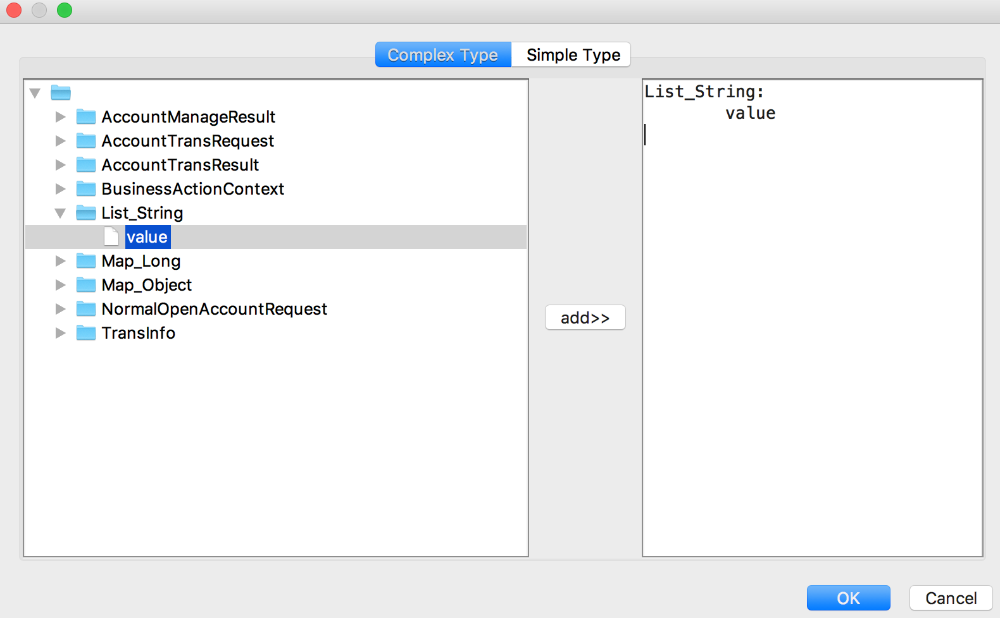
图52
自行编辑，然后可选中第一列进行复制，如图53： 图53
map 编辑
可参照入参中有关 map 部分。
enum 编辑
可参照入参中有关 enum 部分。
右键功能说明
复制当前节点
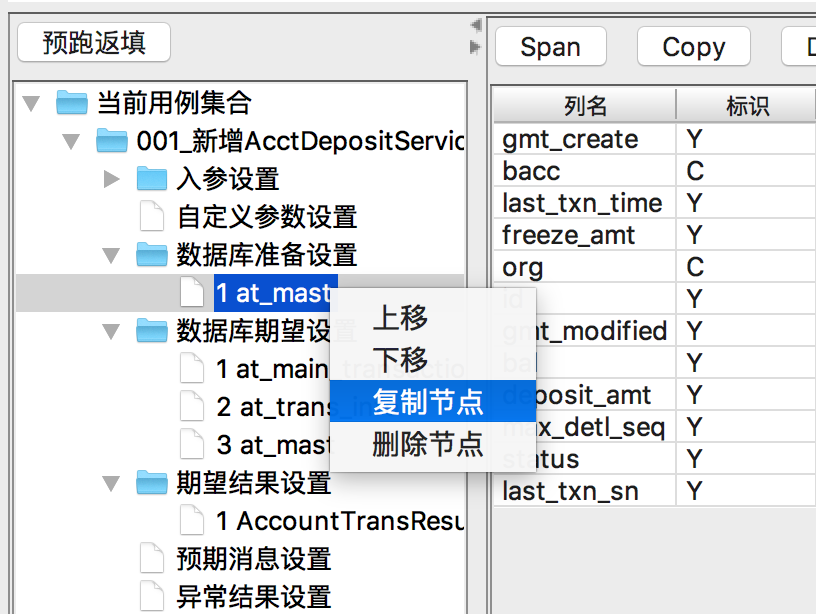
图54
删除当前节点
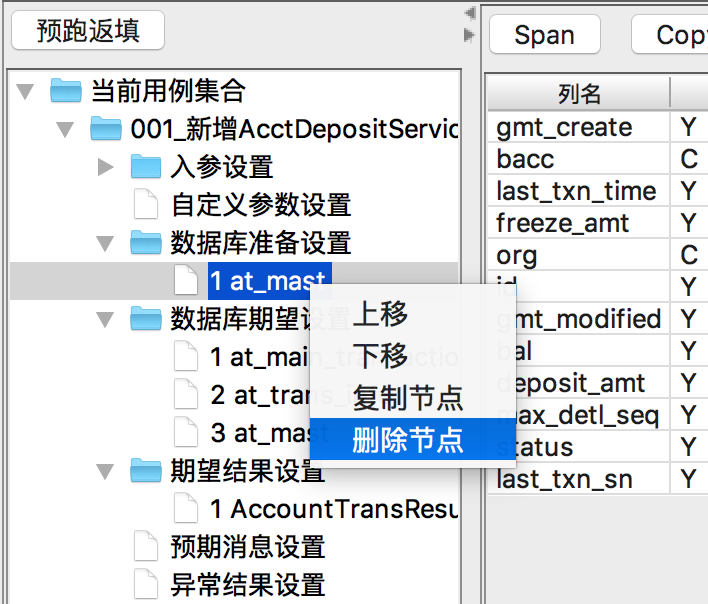
图55
修改用例名称
在用例名上右键，修改用例名称：
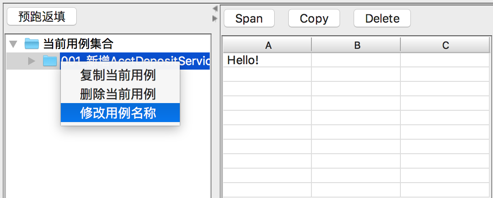
图56
复制用例
在用例名上右键，复制当前用例：
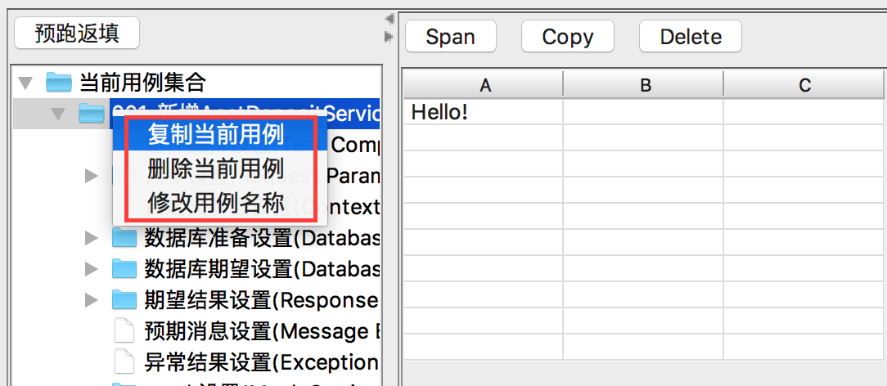
图57
预跑返填
为了提高期望数据值（返回结果和 DB 数据）的快速填写，框架提供了预跑返填功能，一个用例准备好入参、准备数据等，用例执行的基本数据后，可先不必填写期望数据，用例运行起来后，框架可自动捕捉返回结果、DB 变更数据等，运行后打开编辑器点击 预跑返填，可填充指定用例的期望数据。具体使用案例： 前置条件：配置 ACTS 日志
acts-config.properties配置文件中开关设置：collect_case_result=true；- 正常执行 ACTS 用例；
- 通过插件反填结果，需要选中要操作的那一行
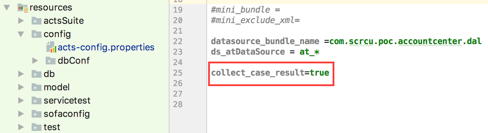
图58
这一步只是框架提供的便捷特性，在预跑结果反填之后请严格测试每一条数据的正确性，避免代码缺陷产生遗漏。
一键返填
如图59，选中需要反填的用例，确认即可。
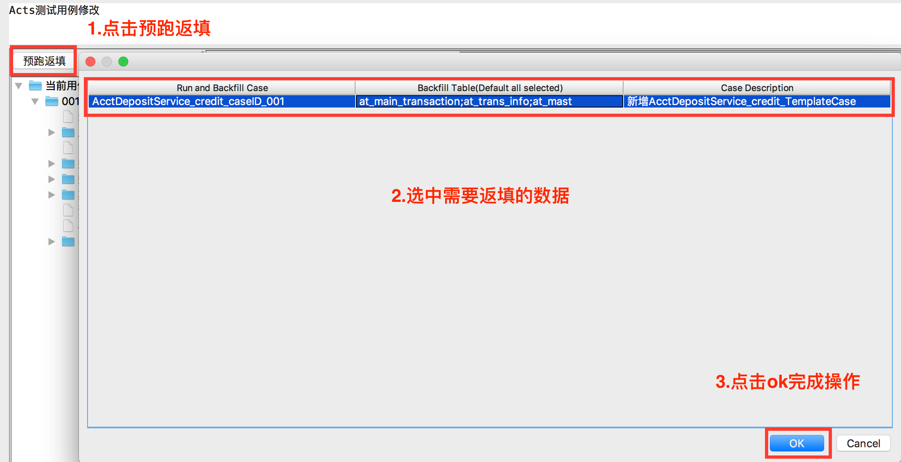
图59